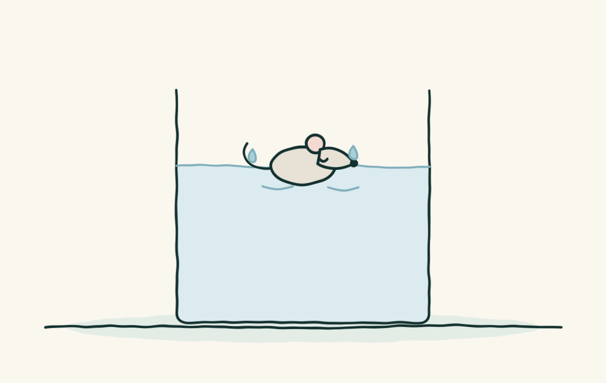
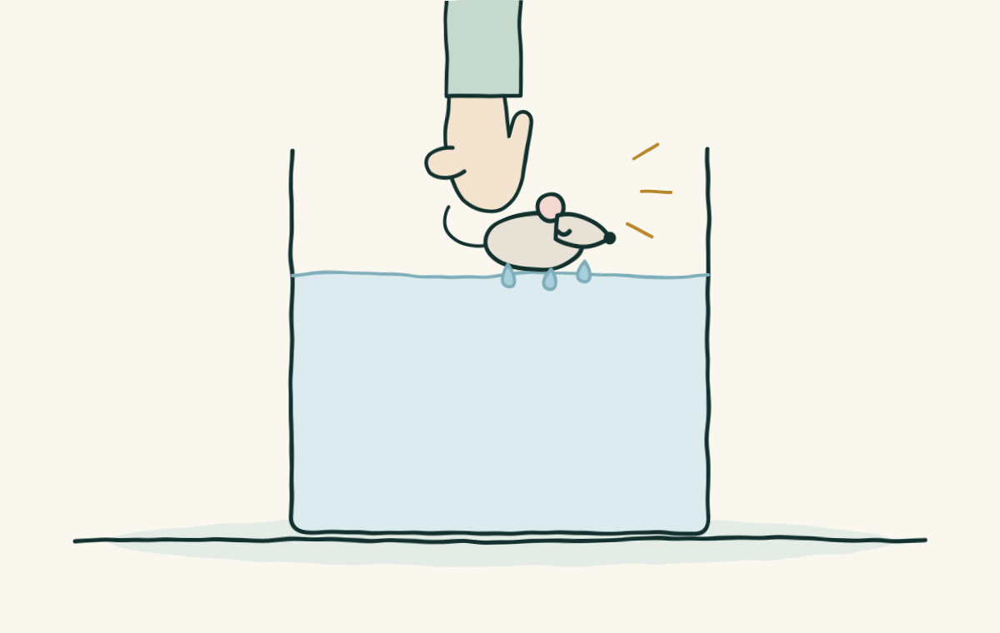
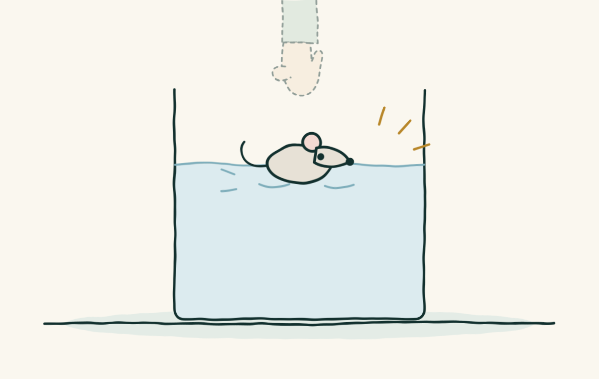
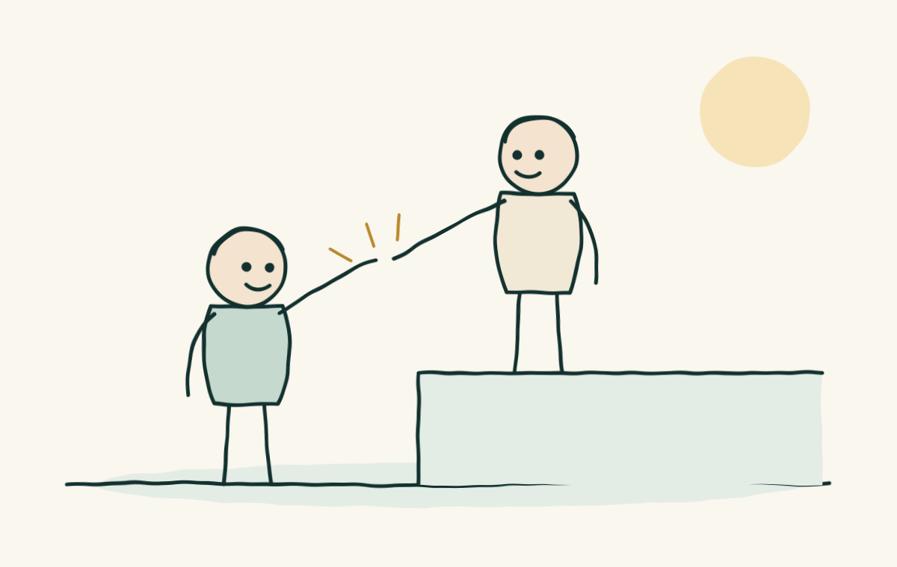

Stories · Story 3
The hand that might return
Hope changes how long we can keep trying.
Why can you push through one hard season and feel flattened by another that looks the same from outside? This story is about the difference.

Nowhere to stand
A small animal was placed in a container of water with smooth sides. There was no floor to stand on and no edge to hold. It swam until its movements grew weak.

Then a hand
When it was exhausted, a hand lifted it out of the water, dried it and let it rest.

The same water, a different meaning
Later it was put back in. This time it kept going far longer. The water was the same. The body still got tired. But something had changed. Somewhere beyond the walls, rescue had become possible.
Hope is not pretending the water is shallow. It is believing another outcome is still possible, and having a reason to take the next stroke.
One honest note: the version of this story that goes around online is told with more confidence than the history supports. Curt Richter’s swimming research in the last century was real, but the tidy sequence people repeat simplifies complicated experiments. So do not hold on to a number of minutes or hours. Hold on to the link between what you expect, how stressed you are and how long you keep going.
What the story shows
- Effort needs evidence
- People can work through great difficulty when they believe support, progress or relief is possible. When every action seems useless, even small tasks feel heavy.
- Learned helplessness
- Psychologists use this name for a pattern where facing things you cannot control, again and again, can reduce later attempts to change your situation. It is not a label for every tired person, and it does not mean anyone chooses to give up.
- A sense of control matters
- Two people can face the same demands and feel them very differently, depending on whether they can affect the result, see what is coming, or reach support. One small real choice can restart movement.
- Hope has to be believable
- Empty reassurance fails because it asks you to ignore what you see. Real hope has something to stand on: a visible next step, a person you trust, useful information, rest, treatment or a real change in conditions.
So the hand in the story is more than a pep talk. It stands for a change in the surroundings. Encouragement matters. So do conditions that make effort more likely to work.
Where it shows up
- At work. A manager who gives only pressure makes effort feel endless. Clear priorities, feedback and practical help make the work feel like it leads somewhere.
- In recovery. Progress is uneven. You often need proof that one setback does not erase every gain, and that support is still there.
- In relationships. One reliable response can matter more than many promises. Being consistent teaches a person that reaching out is safe.
- With yourself. Hope can start as a small deal: do the next useful thing, then look again. You do not need to feel sure about the whole future.

Five questions worth asking
- Where in my life has effort started to feel pointless?
- Is the problem a lack of motivation, or is my situation giving me no feedback and no control?
- What kind of support would give me real evidence that things can change?
- Who has been a dependable helping hand for me?
- What is one next stroke I can take without having to solve everything today?
Write your answers in the brain dump
Build a hope ladder
- Name the hard situation without making it smaller than it is.
- Separate what you cannot control from what you can influence.
- Choose one action small enough to finish within twenty-four hours.
- Name one person, service or resource that can give real support.
- Decide when you will pause and look again, instead of pushing without limit.
Hope is not endless effort. Sometimes the hopeful thing is to rest, ask for help, change the conditions or leave the water.
If things feel hopeless most days, please do not carry it alone. Talk to a doctor or a mental health professional. If you are in crisis, contact your local emergency number or a crisis line in your country.